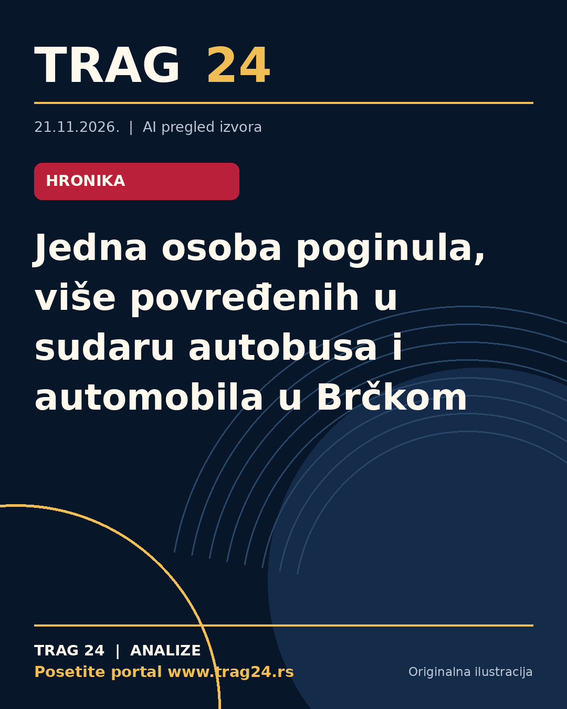

Jedna osoba poginula, više povređenih u sudaru autobusa i automobila u Brčkom

ŠTA SE DOGODILO
Večeras se dogodio sudar autobusa i putničkog automobila na izlazu iz Dubrava prema Ceriku u Brčko distriktu, u Bosni i Hercegovini. U ovoj saobraćajnoj nezgodi jedna osoba je izgubila život, dok je više putnika povređeno i hospitalizovano.
HRONOLOGIJA
Nesreća je prijavljena policiji u 19.01 časova. Na lice mesta izašla je policija Brčko distrikta, koja je potvrdila incident, a saobraćaj na toj deonici je obustavljen radi vršenja uviđaja. Takođe, angažovan je dežurni tužilac Tužilaštva Brčko distrikta BiH, koji je takođe prisustvovao uviđaju.
ŠTA NAVODE IZVORI
Prema informacijama koje su preneli portali Blic, Kurir i Danas, potvrđeno je da se radi o sudaru autobusa i putničkog automobila sa smrtnim ishodom jedne osobe i više povređenih. Portparolka policije Brčko distrikta, Dževida Hukićević, navela je da su povređeni zbrinuti u Javnoj zdravstvenoj ustanovi u Brčkom. Svaki od izvora ističe da je saobraćaj na mestu nesreće obustavljen radi uviđaja, a o događaju je obavešten dežurni tužilac.
ŠTA JE POTVRĐENO
- Jedna osoba je poginula u nesreći. - Više ljudi je povređeno. - Povređeni su primljeni u zdravstvenu ustanovu u Brčkom. - Nesreća se dogodila u večernjim satima na izlazu iz Dubrava prema Ceriku u Brčko distriktu. - Policija i tužilac su obavili uviđaj. - Saobraćaj na tom delu puta bio je obustavljen privremeno radi uviđaja.
ŠTA NIJE POTVRĐENO
Iz dostupnih tekstova nema informacija o tačnom uzroku nesreće, identitetu nastradalog ili povređenih lica, stepenu povreda, kao ni detaljima vozila učesnika nesreće. Takođe, nije poznato da li su druge službe bile uključene u intervenciju i koliko je dugo trajala obustava saobraćaja.
ŠTA OSTАJE OTVORENO: Pitanja o uzrocima nesreće i okolnostima koje su dovele do sudara ostaju neodgovorena u dosadašnjim izveštajima. Takođe, ostaje nepoznato koliko je precizno povređenih i kakvi su njihovi zdravstveni statusi. Dalji razvoj događaja zavisi od zvaničnih izveštaja i eventualnih istraga nadležnih institucija.
Izvori
- https://www.blic.rs/vesti/hronika/stravicna-autobuska-nesreca-u-brckom-ima-mrtvih-i-povredjenih/sbjf2kp
- https://www.kurir.rs/region/bosna-i-hercegovina/10169081/sudar-autobusa-i-automobila-brcko
- https://www.danas.rs/svet/region/jedna-osoba-poginula-vise-povredjenih-u-sudaru-autobusa-i-automobila-u-brckom/
Ova analiza je pripremljena uz pomoć veštačke inteligencije na osnovu javno dostupnih izvora. Navodi izvora nisu nužno nezavisno potvrđeni.